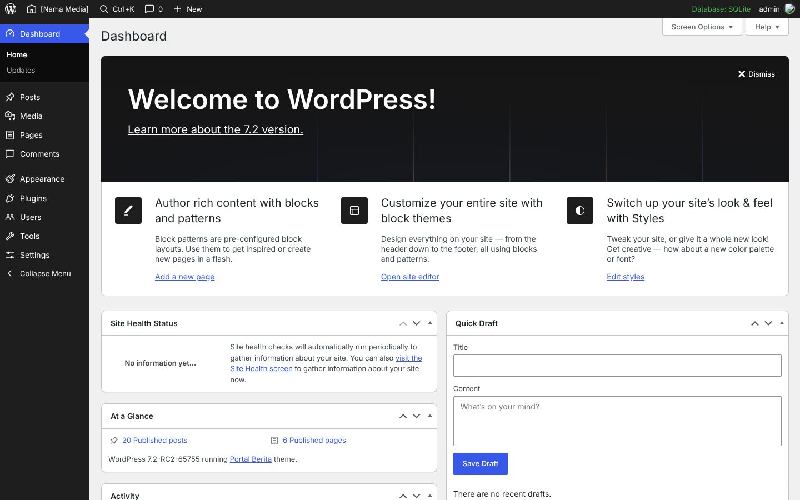
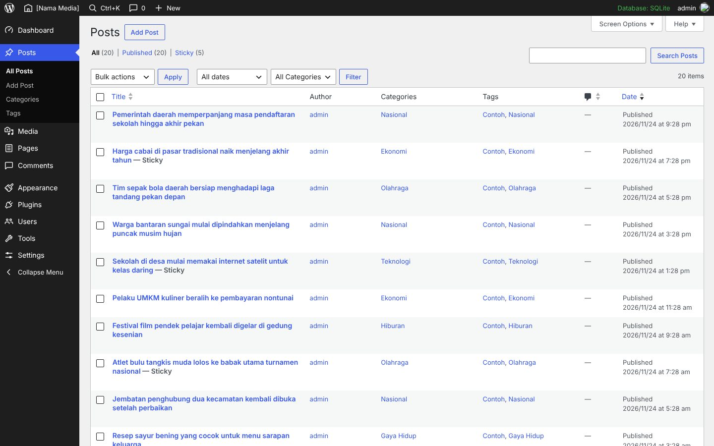
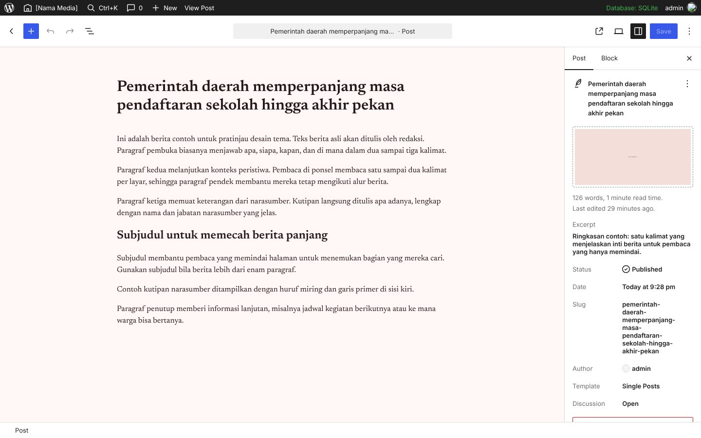
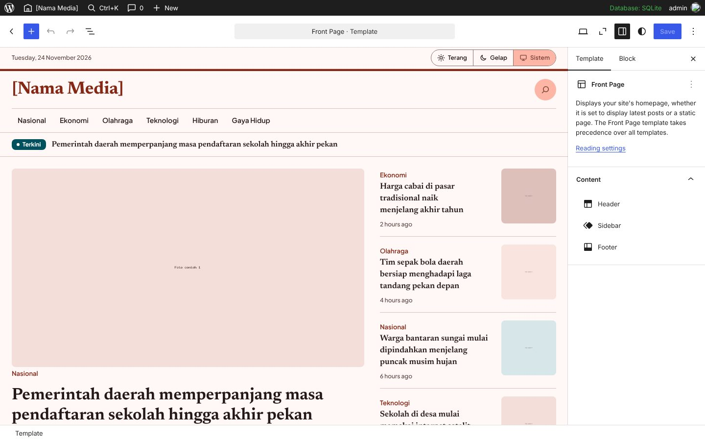
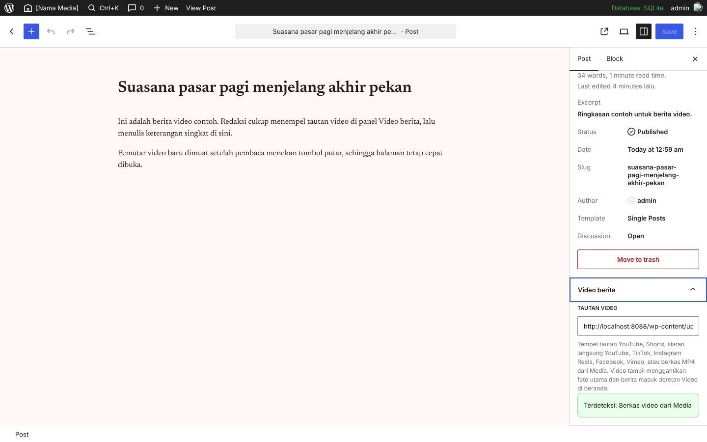
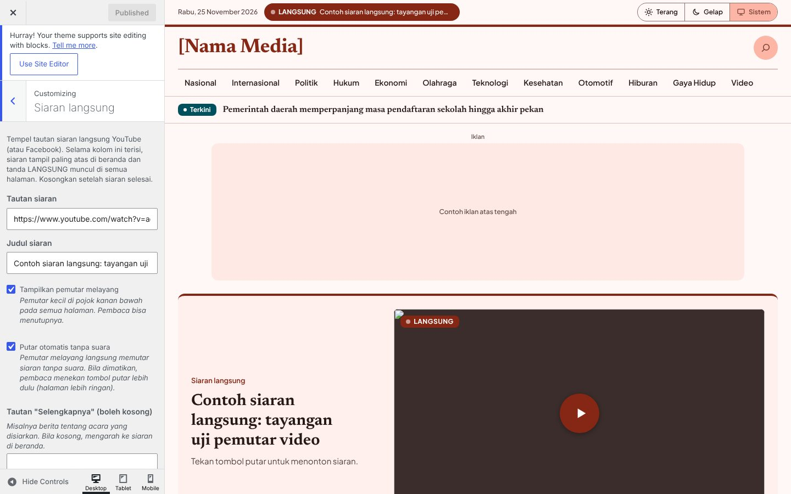
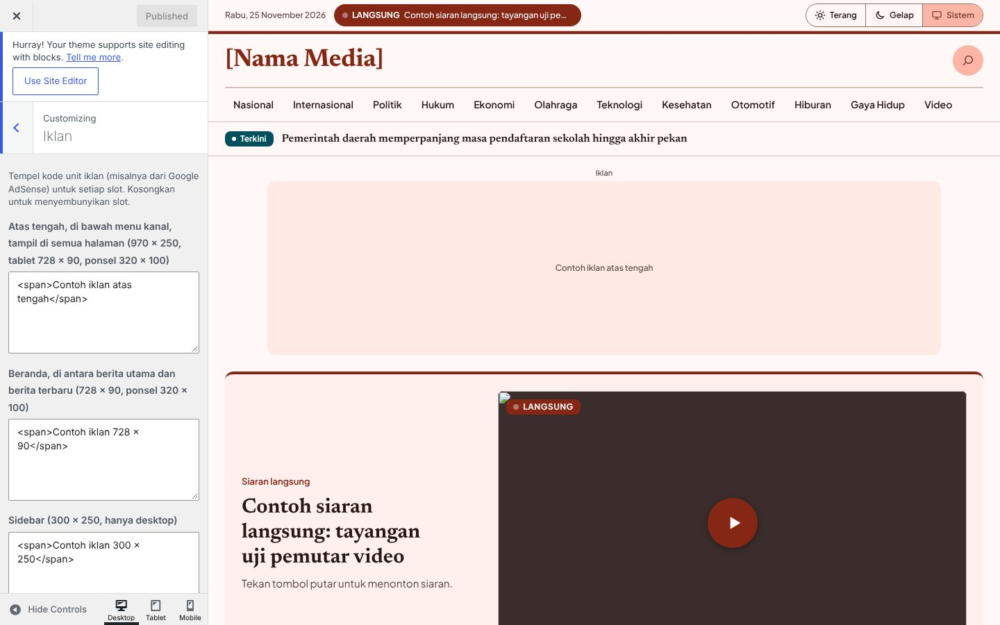

Tampilan admin WordPress
Tangkapan layar dari situs uji yang memakai tema ini. Bahasa admin di sini masih Inggris karena paket bahasa belum dipasang di situs uji. Di situs asli, admin bisa dibuat berbahasa Indonesia lewat Settings > General > Site Language.
Dasbor
Halaman pertama setelah login. Dari menu kiri, redaksi mengelola berita (Posts), media, halaman, dan pengguna.

Daftar berita
Semua berita dengan kanal, tag, dan status. Berita yang disematkan (Sticky) tampil di blok Pilihan Redaksi.

Menulis berita
Editor blok WordPress. Huruf dan warna di editor sama dengan tampilan situs. Ringkasan (Excerpt) menjadi dek artikel.

Editor situs
Mengubah susunan beranda, header, footer, dan menu kanal tanpa coding.

Video berita
Saat menulis berita, tempel tautan video di panel Video berita (kanan). Bisa dari YouTube, Shorts, siaran langsung YouTube, TikTok, Instagram Reels, Facebook, Vimeo, atau berkas MP4 dari Media. Sistem langsung memberi tahu sumber video yang terdeteksi.

Siaran langsung
Tampilan > Sesuaikan > Siaran langsung. Tempel tautan siaran YouTube atau Facebook dan judulnya. Selama terisi, siaran tampil paling atas di beranda, tanda LANGSUNG muncul di semua halaman, dan pemutar melayang muncul di pojok kanan bawah (bisa dimatikan, begitu juga putar otomatis tanpa suara). Kosongkan setelah siaran selesai.

Pengaturan iklan
Tampilan > Sesuaikan > Iklan. Tempel kode AdSense per slot, termasuk slot baru Atas tengah (970 x 250) di bawah menu kanal. Slot yang kosong tidak tampil.
